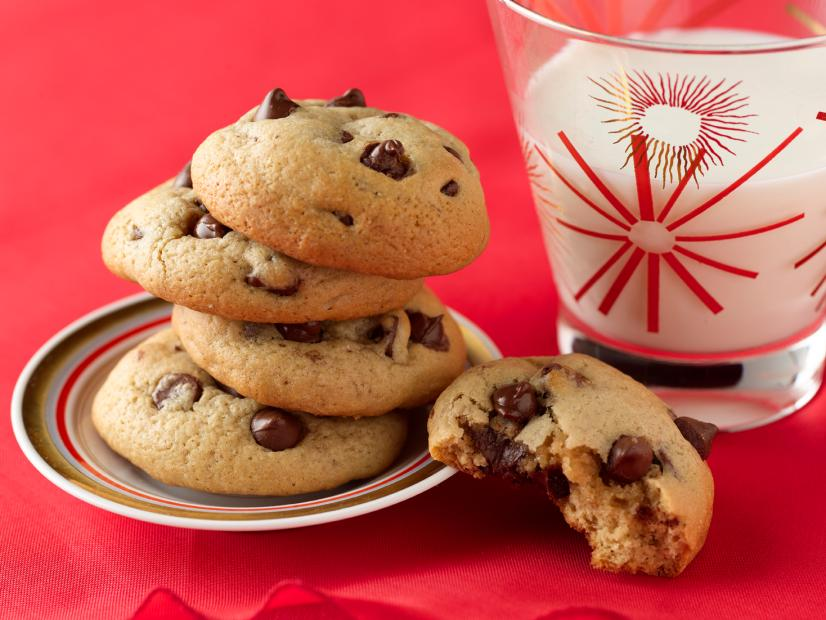

Chocolate Chip Cookie Recipe

Home made home style chocolate chip cookies.
Best chocolate chip cookies in the world.
This cookies are light and fluffy soft. They come out soft and stay soft.
Ingredients:
- 1/2 cup (1 stick) unsalted butter
- 3/4 cup packed dark brown sugar
- 3/4 cup sugar
- 2 large eggs
- 1 teaspoon pure vanilla extract
- 1 (12-ounce) bag semisweet chocolate chips, or chunks
- 2 1/4 cups all-purpose flour
- 3/4 teaspoon baking soda
- 1 teaspoon fine salt
Directions:
- Evenly position 2 racks in the middle of the oven and preheat to 375 degrees F. (on convection setting if you have it.) Line 2 baking sheets with parchment paper or silicone sheets. (If you only have 1 baking sheet, let it cool completely between batches.)
- Put the butter in a microwave safe bowl, cover and microwave on medium power until melted.(Alternatively melt in a small saucepan.) Cool slightly. Whisk the sugars, eggs, butter and vanilla in a large bowl until smooth.
- Whisk the flour, baking soda and salt in another bowl.Stir the dry ingredients into the wet ingredients with a wooden spoon; take care not to over mix. Stir in the chocolate chips or chunks.
- Scoop heaping tablespoons of the dough onto the prepared pans. Wet hands slightly and roll the dough into balls. Space the cookies about 2-inches apart on the pans. Bake, until golden, but still soft in the center, 12 to 16 minutes, depending on how chewy or crunchy you like your cookies. Transfer hot cookies with a spatula to a rack to cool. Serve.
- Store cookies in a tightly sealed container for up to 5 days.
- For a Rocky Road Bar:
- Lightly butter a 9 by 13-inch baking pan. Make the batter as per cookie recipe and fold in 1 cup chopped walnuts along with the chocolate chips. Spread batter in prepared pan. Bake until the edges are light brown and the batter sets, about 45 minutes. Cool slightly and cover surface with 4 cups marshmallows and 1 cup chocolate chips. Broil at least 8 inches from the heat until marshmallows turn golden brown, about 2 minutes. (Keep an eye on the marshmallows, and turn the pan frequently--they go from golden to char in a wink.) Cool, cut and serve.
- Return to Top Page
- Return to Odin Recipes